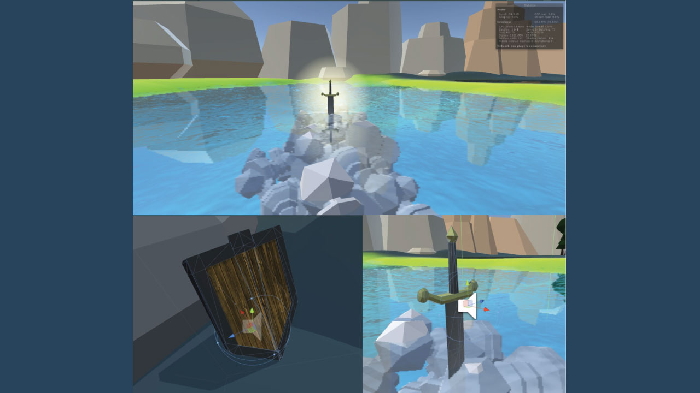

Virtual Reality Immersion
UX/Game Design, Developer
This stylized game world explores the effects on an individual's life when faced with obligations that are a deterrent to themselves. Using the Oculus Rift virtual reality helmet, this experience is designed to understand and generate empathy for the issue. I brainstormed and refined the idea and went on to create a tangible example of it working and shown to the public.
Part 1: Context
As a person bound by the word of an overseer unseen, enter the world and do its bidding in this stylized game world.
In the world the player is constantly micromanaged by a sarcastic and annoying voice that constantly reminds them of their status and position. Various obstacles bar them from going on off on their own free will even if there is a clear path forward. This project was a UX design within a game context on the topic of empathy. It was also where I was to use my broad skillset in design, programming, and project management.
My Role:
Programming game elements/actions, models(sword, shield, and land environments), prototyping, design direction, project manager of group of 4.
Tools: Unity, Maya, Oculus Rift, Persona creation, Brainstorm sessions. Scenes/Models rendered using Unity.
Part 2: Process
Focus Area: Research and Framework
This short adventure seems easy but it asks a question: Why must they do this? Exploring the concept of forced cooperation, the voice commands the player to find items of questionable worth to themselves and ventures off to reveal a deadly end through blind faith/forced cooperation.
During idea generation, we decided to use a polygon style world to give a surreal experience and using an unseen voice to portray the obligations within an individual's mind. The voice itself actively responds to the user speaking through a mic while watching the progress go on to create a unique experience. While considered to use a questionnaire about themselves before hand, it was deemed too uncomfortable.
The target users were geared towards a pre-teen, teen, and young-adult audience who were often under obligation to others/authority, showing them a perspective to help clear their minds and reflect. It was also geared towards adults whom are disconnected with such situations; why would they care if they never have experienced it? The voice would try to engage sarcastically as possible to the players as well as demanding attention to immerse them as much as possible to the situation.
Focus Area: Designing, Programming, and Presentation
The next step was to create the space using the art direction via Unity, the Oculus Rift, and Maya. I created the sword, shield, and other objects and brought them into Unity. The code that followed the models were overall programmed by me in C#: Creating the appropriate events, triggers, and effects that would be used in the experience.
Public Showcase generated interesting results
As part of a showcase of various VR work about "empathy", the results of the users were mixed: the idea was understood but half of the participants took the experience as a challenge against themselves and the game's limitations and went against what the voice commands at every-turn. When asked casually about the experience after, they said they had fun while saying they did understand the undertone of forced obligation.
Part 3: Reflection
It made me happy that people enjoyed our experience. It allowed me to use my generalist skillset in a variety of roles: Project Manager, UX Designer, and Developer. Although I focus on UX design, it does not bar me from being able to do more than design and actually create and organize others to do the same.


{kind=link}
{kind=link}
{kind=link}
{kind=link}
{kind=link}